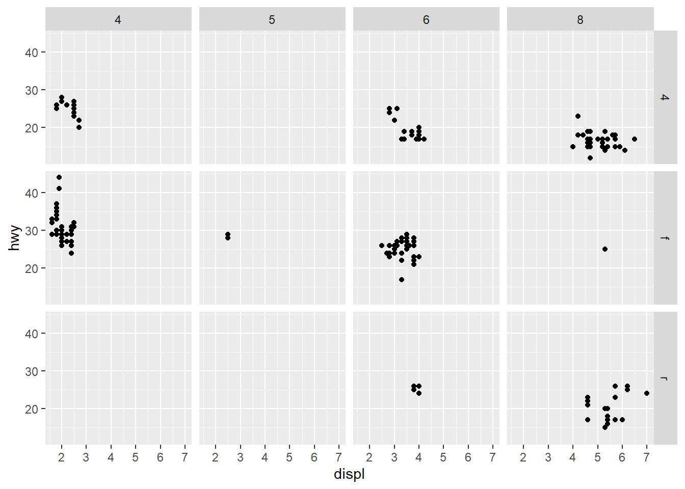

1 Basic
In this book, we mainly focus on ggplot2 for generating plots.
Here, we briefly introduce the basic grammar of ggplot2.
This chapter is mainly adapted from the book R for Data Science (https://r4ds.had.co.nz/data-visualisation.html).
1.2 Prerequisites
Install the ggplot2 and tidyverse package
patchwork is a very useful package for combining multiple plots
install.packages("ggplot2")
install.packages("tidyverse")
install.packages("patchwork")Load the packages. We use the mpg dataset for illustration.
library(ggplot2)
library(tidyverse)
library(patchwork)
data("mpg")
mpg## # A tibble: 234 × 11
## manufacturer model displ year cyl trans drv cty hwy fl class
## <chr> <chr> <dbl> <int> <int> <chr> <chr> <int> <int> <chr> <chr>
## 1 audi a4 1.8 1999 4 auto… f 18 29 p comp…
## 2 audi a4 1.8 1999 4 manu… f 21 29 p comp…
## 3 audi a4 2 2008 4 manu… f 20 31 p comp…
## 4 audi a4 2 2008 4 auto… f 21 30 p comp…
## 5 audi a4 2.8 1999 6 auto… f 16 26 p comp…
## 6 audi a4 2.8 1999 6 manu… f 18 26 p comp…
## 7 audi a4 3.1 2008 6 auto… f 18 27 p comp…
## 8 audi a4 quattro 1.8 1999 4 manu… 4 18 26 p comp…
## 9 audi a4 quattro 1.8 1999 4 auto… 4 16 25 p comp…
## 10 audi a4 quattro 2 2008 4 manu… 4 20 28 p comp…
## # … with 224 more rows1.3 Creating a ggplot
We use scatter plot (geom_point) to plot displ on x-axis and hwy on y-axis:
# scatter plot
# hwy：highway miles per gallon
# displ：engine displacement, in litres
ggplot(data = mpg) +
geom_point(mapping = aes(x = displ, y = hwy))
In ggplot2, we use the data argument to specify the dataset that we want to plot, and assign variables inside aes() function, such as mapping = aes(x = displ, y = hwy) .
To create different plot, we use the geom_* function, such as scatter plot (geom_point) and barplot (geom_bar). We will go thorough the basic plot types in following chapters.
1.4 Aesthetic mappings
Beside plotting the data, we can assign additional features to point, such as color, size and shape. In ggplot, those properties are called as aesthetic.
For example, you can map the colors of your points to the class variable to reveal the class of each car.
ggplot(data = mpg) +
geom_point(mapping = aes(x = displ, y = hwy, color = class))
Or size of the point
ggplot(data = mpg) +
geom_point(mapping = aes(x = displ, y = hwy, size = class))## Warning: Using size for a discrete variable is not advised.
You can also modify the color of the geom, this will override the color assign in aes.
ggplot(data = mpg) +
geom_point(mapping = aes(x = displ, y = hwy, color = class), color = "blue")
Common aesthetic arguments includes:
color/colourandfill: for mapping the colors. To be noted, scatter plot only acceptcolor/colourfor mapping colors.
shape: for mapping the shape of the point.
alpha: for mapping the transparency.
size: for mapping the size.
1.5 Facets
To split the plot into subplots that each display one subset of the data, is facets.
You can use either facet_wrap() or facet_grid() for facet.
ggplot(data = mpg) +
geom_point(mapping = aes(x = displ, y = hwy)) +
facet_wrap(~ class, nrow = 2)
or the combination of two variables
ggplot(data = mpg) +
geom_point(mapping = aes(x = displ, y = hwy)) +
facet_grid(drv ~ cyl)
1.6 Geometric objects
We can also combine different geom in one plot
ggplot(data = mpg, mapping = aes(x = displ, y = hwy)) +
geom_point() +
geom_smooth()## `geom_smooth()` using method = 'loess' and formula 'y ~ x'
# equivalent with the following codes:
# ggplot(data = mpg) +
# geom_point(mapping = aes(x = displ, y = hwy)) +
# geom_smooth(mapping = aes(x = displ, y = hwy))we can specify different aesthetic and different data in each geom
ggplot(data = mpg, mapping = aes(x = displ, y = hwy)) +
geom_point(mapping = aes(color = class)) +
geom_smooth(data = filter(mpg, class == "subcompact"), se = FALSE)## `geom_smooth()` using method = 'loess' and formula 'y ~ x'
1.7 Statistical transformation
Next, we use diamonds dataset for illustration.
data("diamonds")
diamonds## # A tibble: 53,940 × 10
## carat cut color clarity depth table price x y z
## <dbl> <ord> <ord> <ord> <dbl> <dbl> <int> <dbl> <dbl> <dbl>
## 1 0.23 Ideal E SI2 61.5 55 326 3.95 3.98 2.43
## 2 0.21 Premium E SI1 59.8 61 326 3.89 3.84 2.31
## 3 0.23 Good E VS1 56.9 65 327 4.05 4.07 2.31
## 4 0.29 Premium I VS2 62.4 58 334 4.2 4.23 2.63
## 5 0.31 Good J SI2 63.3 58 335 4.34 4.35 2.75
## 6 0.24 Very Good J VVS2 62.8 57 336 3.94 3.96 2.48
## 7 0.24 Very Good I VVS1 62.3 57 336 3.95 3.98 2.47
## 8 0.26 Very Good H SI1 61.9 55 337 4.07 4.11 2.53
## 9 0.22 Fair E VS2 65.1 61 337 3.87 3.78 2.49
## 10 0.23 Very Good H VS1 59.4 61 338 4 4.05 2.39
## # … with 53,930 more rowsggplot2 contains lots of useful statistical transformation for visualization. For example, if we want to count the number of diamonds grouped by cut, we can simply use barplot to do this job.
table(diamonds$cut)##
## Fair Good Very Good Premium Ideal
## 1610 4906 12082 13791 21551ggplot(data = diamonds) +
geom_bar(mapping = aes(x = cut), stat = "count")
# equals to:
# ggplot(data = diamonds) +
# stat_count(mapping = aes(x = cut))In count mode, geom_bar can group the variables by x and count the frequency of each member.
Also, you may be interested with other statistics
ggplot(data = diamonds) +
stat_summary(
mapping = aes(x = cut, y = depth),
fun.min = min,
fun.max = max,
fun = median
)
1.8 Position adjustment
The color of barplot can be assigned with color and fill
p1 <- ggplot(data = diamonds) +
geom_bar(mapping = aes(x = cut, colour = cut))
p2 <- ggplot(data = diamonds) +
geom_bar(mapping = aes(x = cut, fill = cut))
# patchwork for combining plots
p1 + p2Beside, color can be grouping variable for displaying different property.
ggplot(data = diamonds) +
geom_bar(mapping = aes(x = cut, fill = clarity), position='identity')
Each layer of the barplot represents the number of diamonds with different clarity.
position have three options: "identity", "dodge" or "fill".
position = "fill"Show the proportions of each group
ggplot(data = diamonds) +
geom_bar(mapping = aes(x = cut, fill = clarity), position = "fill")
position = "dodge"Place overlapping objects beside one another
ggplot(data = diamonds) +
geom_bar(mapping = aes(x = cut, fill = clarity), position = "dodge")